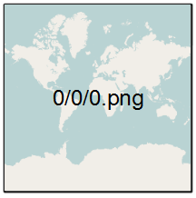
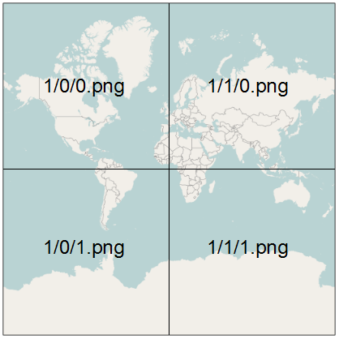

|
Guten Morgen |
Hier und Jetzt!
- Wer bin ich
- Was solltest du mitbringen
- Was machen wir konkret in den nächsten 45 Minuten?
- Link zur Präsentation
Let's learn Leaflet
In vier Schritten eine Karte zaubern!
Wir beginnen mit einer ganz einfachen HTML-Datei
|
Integriere die notwendigen JavaScript und Cascading Style Sheet (CSS) Dateien
|
Erstelle ein <div>-Element in dem die Karte angezeigt werden soll
|
Nun wird es spannend: Erstelle das Karten-Objekt
|
Füge einen Karten-Layer zur Karte hinzu
|
Koordinaten todo
Wie weiß Leaflet welche Kacheln angezeigt werden sollen
Zoomstufe 0; Kachelanzahl: 1
Kachelbreite 40.038 km; 1 Pixel entspricht 156 km

Zoomstufe 1; Kachelanzahl: 4
Kachelbreite 20.019 km; 1 Pixel entspricht 78 km

Zoomstufe 2; Kachelanzahl: 16
Kachelbreite 5.005 km; 1 Pixel entspricht 39 km

| Zoomstufe | Kachelanzahl | Die Kachelbreite entspricht | Ein Pixel entspricht |
|---|---|---|---|
| 0 | 1 | 40.038 km | 156 km |
| 1 | 4 | 20.019 km | 78 km |
| .. | .. | .. | .. |
| 18 | 69 Mrd. | 153 m | 0,6 m |
| 19 | 275 Mrd. | 76 m | 0,3 m |
Die vollständige Tabelle findet Ihr unter der Adresse http://wiki.openstreetmap.org/wiki/Zoom_levels.
http://{s}.tile.osm.org/{z}/{x}/{y}.png
https://{s}.tile.thunderforest.com/landscape/{z}/{x}/{y}.png?apikey=x
http://{s}.tile.osm.org/{z}/{x}/{y}.png
https://{s}.tile.thunderforest.com/landscape/{z}/{x}/{y}.png?apikey=x
Thunderforest (https://thunderforest.com/)
API Key notwendig
|
Stamen (https://stamen.com/)
Künstlerische Karten
Eine zusätzliche JavaScript-Datei ist notwendig. |
Weitere Anbieter:
http://wiki.openstreetmap.org/wiki/Tiles
OpenCycleMap - OpenSkiMap - OpenSeeMap
Images als Layer – Web-Map-Service
Sie haben eine Satellitenaufnahme und möchten diese als Layer verwenden.
- Eine Möglichkeit wäre ein Umwandeln dieser Satellitenaufnahme in 275 Milliarden Kacheln - es gibt alternative Techniken.
-
Eine Alternative zur beschriebenen Kachel-Technik ist der
Web-Map-Service. - Ein Web-Map-Service (WMS) ist eine Schnittstelle die Auszüge aus Landkarten über das Internet anbietet.
- Die Anfrage liefert ein georeferenziertes Rasterbild zurück.
Beispielweise bietet der Deutsche Wetterdienst (DWD) WMS Dienste mithilfe der Open Source Software Geoserver.
Die Karten kennt Ihr von vielen Apps. Neben den amtlichen Warnungen gibt es auch andere Themen wie Pollenflug Gefahrenindex.
<!DOCTYPE HTML>
<html>
<head>
<title>Eine OSM Karte mit Leaflet</title>
<link rel="stylesheet" href="../leaflet/leaflet.css" />
<script src="../leaflet/leaflet.js"></script>
</head>
<body>
<div style="height: 700px;" id="mapid"></div>
<script>
var mymap = L.map('mapid').setView([50.27264, 7.26469], 7);
L.tileLayer('http://{s}.tile.osm.org/{z}/{x}/{y}.png').addTo(mymap);
var dwd = L.tileLayer.wms("https://maps.dwd.de/geoserver/dwd/wms", {
format: 'image/png',
transparent: true,
layers:'dwd:Warngebiete_Kreise',
attribution: "Deutscher Wetterdienst"
}).addTo(mymap);
var dwd = L.tileLayer.wms("https://maps.dwd.de/geoserver/dwd/wms", {
format: 'image/png',
transparent: true,
layers:'dwd:Warnungen_Gemeinden_vereinigt',
attribution: "Deutscher Wetterdienst"
}).addTo(mymap);
</script>
</body>
</html>
Mit obigem Aufruf erhält man ein speziell zusammengestelltes Bild vom DWD Geo Webservice - sofern Warnungen vorhanden sind.
Erinnert ihr euch an den 27. Juli 2017?

Weitere Informationen beim Deutschen Wetterdienst.
|
Die Karte mit Daten bestücken
Ein Punkt
|
Ein Marker
|
Ein Polyline
|
Ein Polygon
|
Ein Rectangle
|
Ein Circle
|
Ein MultiPolygon
|
Ein MultiPolyline
|
Ein LayerGroup
|
Ein FeatureGroup
|
Ein Popup
|
GeoJSON einmal genau angeguckt
Die Wurzeln von GeoJSON
XML wurde 1998 veröffentlicht, um Daten zwischen Maschinen austauschen zu können.
<joomlers>
<number>1721</number>
<vorname>Astrid</vorname>
<nachname>Günther</nachname>
</joomlers> 95 Zeichen
„joomlers“: {
„number“: „1721“,
„vorname“: „Astrid“,
„nachname“: „Günther“
}, 73 Zeichen
GeoJSON Objekte
Im Juni 2008 wurde die Formatspezifikation verabschiedet.Im August 2016 wurde die RFC (Requests for Comments) 7946 veröffentlicht.
http://geojson.org/
Position
Point

|
|
Multipoint

|
|
LineStrings

|
|
MultiLineString

|
|
Polygone

|
|

|
|
Multipolygon

|
|

|
|
GeometryCollection
{
"type": "Feature",
"geometry": {
"type": "GeometryCollection",
"geometries": [{
"type": "Point",
"coordinates": [0, 0]
}, {
"type": "LineString",
"coordinates": [[0, 0], [1, 0]]
}]
},
"properties": {
"name": "Der Name dieser GeometryCollection"
}
}